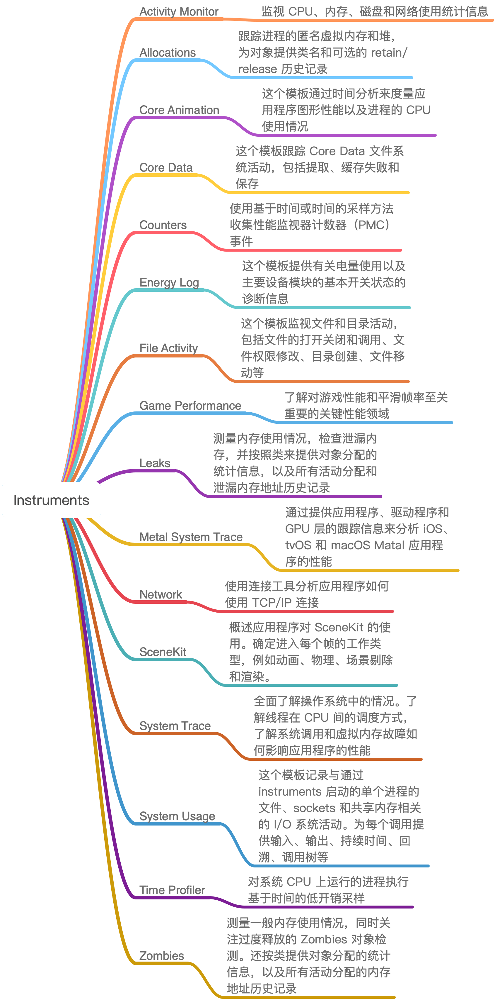
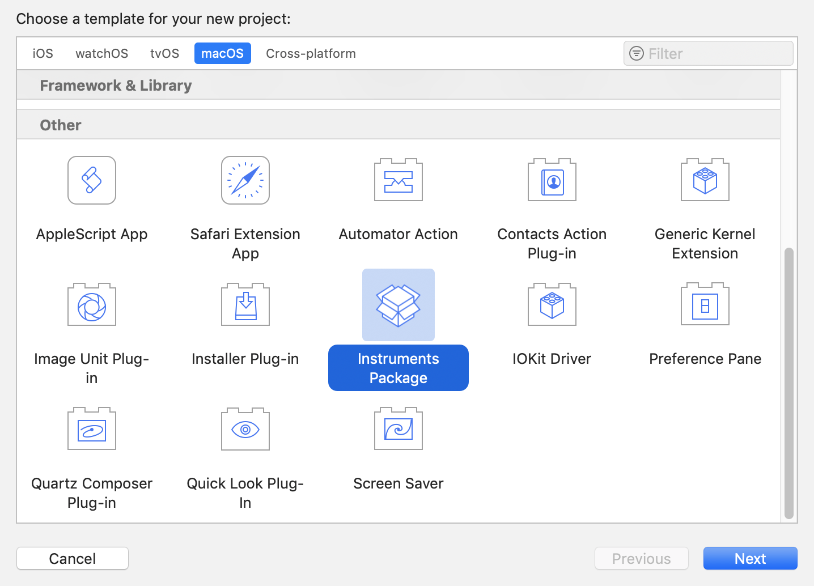
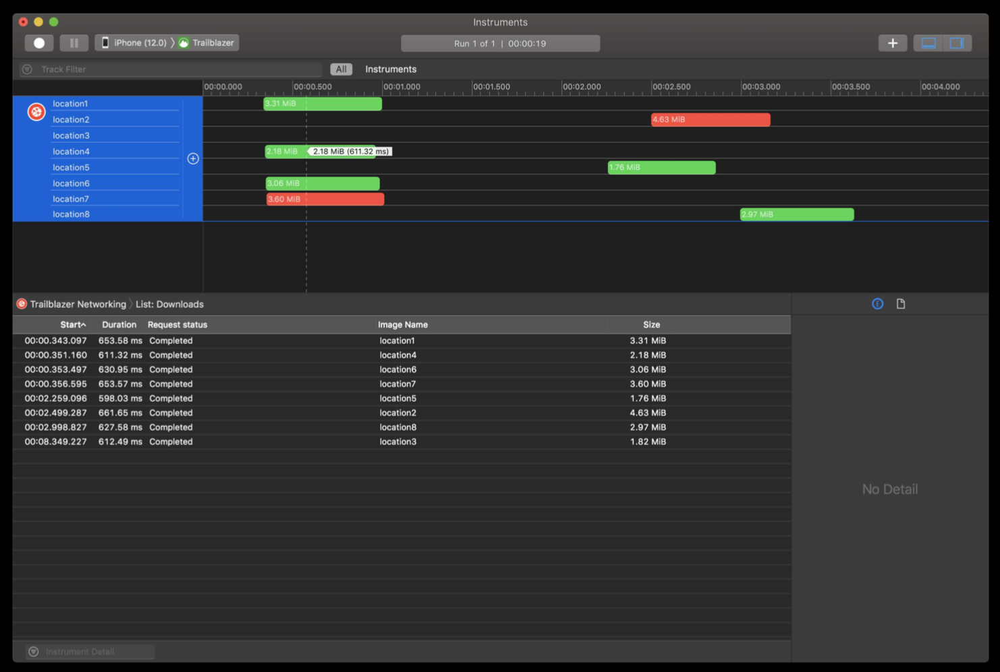

- 00 开篇词 锚定一个点，然后在这个点上深耕.md.html
- 01 建立你自己的iOS开发知识体系.md.html
- 02 App 启动速度怎么做优化与监控？.md.html
- 03 Auto Layout 是怎么进行自动布局的，性能如何？.md.html
- 04 项目大了人员多了，架构怎么设计更合理？.md.html
- 05 链接器：符号是怎么绑定到地址上的？.md.html
- 06 App 如何通过注入动态库的方式实现极速编译调试？.md.html
- 07 Clang、Infer 和 OCLint ，我们应该使用谁来做静态分析？.md.html
- 08 如何利用 Clang 为 App 提质？.md.html
- 09 无侵入的埋点方案如何实现？.md.html
- 10 包大小：如何从资源和代码层面实现全方位瘦身？.md.html
- 11 热点问题答疑（一）：基础模块问题答疑.md.html
- 12 iOS 崩溃千奇百怪，如何全面监控？.md.html
- 13 如何利用 RunLoop 原理去监控卡顿？.md.html
- 14 临近 OOM，如何获取详细内存分配信息，分析内存问题？.md.html
- 15 日志监控：怎样获取 App 中的全量日志？.md.html
- 16 性能监控：衡量 App 质量的那把尺.md.html
- 17 远超你想象的多线程的那些坑.md.html
- 18 怎么减少 App 电量消耗？.md.html
- 19 热点问题答疑（二）：基础模块问题答疑.md.html
- 20 iOS开发的最佳学习路径是什么？.md.html
- 21 除了 Cocoa，iOS还可以用哪些 GUI 框架开发？.md.html
- 22 细说 iOS 响应式框架变迁，哪些思想可以为我所用？.md.html
- 23 如何构造酷炫的物理效果和过场动画效果？.md.html
- 24 A_B 测试：验证决策效果的利器.md.html
- 25 怎样构建底层的发布和订阅事件总线？.md.html
- 26 如何提高 JSON 解析的性能？.md.html
- 27 如何用 Flexbox 思路开发？跟自动布局比，Flexbox 好在哪？.md.html
- 28 怎么应对各种富文本表现需求？.md.html
- 29 如何在 iOS 中进行面向测试驱动开发和面向行为驱动开发？.md.html
- 30 如何制定一套适合自己团队的 iOS 编码规范？.md.html
- 31 iOS 开发学习资料和书单推荐.md.html
- 32 热点问题答疑（三）.md.html
- 33 iOS 系统内核 XNU：App 如何加载？.md.html
- 34 iOS 黑魔法 Runtime Method Swizzling 背后的原理.md.html
- 35 libffi：动态调用和定义 C 函数.md.html
- 36 iOS 是怎么管理内存的？.md.html
- 37 如何编写 Clang 插件？.md.html
- 38 热点问题答疑（四）.md.html
- 39 打通前端与原生的桥梁：JavaScriptCore 能干哪些事情？.md.html
- 40 React Native、Flutter 等，这些跨端方案怎么选？.md.html
- 41 原生布局转到前端布局，开发思路有哪些转变？.md.html
- 42 iOS原生、大前端和Flutter分别是怎么渲染的？.md.html
- 43 剖析使 App 具有动态化和热更新能力的方案.md.html
- 用户故事 我是如何学习这个专栏的？.md.html
- 结束语 慢几步，深几度.md.html
- 捐赠
16 性能监控：衡量 App 质量的那把尺
你好，我是戴铭。
通常情况下，App 的性能问题虽然不会导致 App不可用，但依然会影响到用户体验。如果这个性能问题不断累积，达到临界点以后，问题就会爆发出来。这时，影响到的就不仅仅是用户了，还有负责App开发的你。
为了能够主动、高效地发现性能问题，避免App质量进入无人监管的失控状态，我们就需要对App的性能进行监控。目前，对App的性能监控，主要是从线下和线上两个维度展开。
今天这篇文章，我就从这两个方面来和你聊聊如何做性能监控这个话题。接下来，我们就先看看苹果官方的线下性能监控王牌 Instruments。
Instruments
关于线下性能监控，苹果公司官方就有一个性能监控工具Instruments。它是一款被集成在 Xcode 里，专门用来在线下进行性能分析的工具。
Instruments的功能非常强大，比如说Energy Log就是用来监控耗电量的，Leaks就是专门用来监控内存泄露问题的，Network就是用来专门检查网络情况的，Time Profiler就是通过时间采样来分析页面卡顿问题的。
如下图所示，就是Instruments的各种性能检测工具。

图1 Instruments 提供的各种性能检测工具
除了对各种性能问题进行监控外，最新版本的Instruments 10还有以下两大优势：
Instruments基于os_signpost 架构，可以支持所有平台。
Instruments由于标准界面（Standard UI）和分析核心（Analysis Core）技术，使得我们可以非常方便地进行自定义性能监测工具的开发。当你想要给Instruments内置的工具换个交互界面，或者新创建一个工具的时候，都可以通过自定义工具这个功能来实现。
其实，Instruments的这些优势也不是与生俱来的，都是伴随着移动开发技术的发展而演进来的。就比如说自定义工具的功能吧，这是因为App的规模越来越大，往往还涉及到多个团队合作开发、集成多个公司SDK的情况，所以我们就需要以黑盒的方式来进行性能监控。这样的需求，也就迫使苹果公司要不断地增强Instruments的功能。
从整体架构来看，Instruments 包括Standard UI 和 Analysis Core 两个组件，它的所有工具都是基于这两个组件开发的。而且，你如果要开发自定义的性能分析工具的话，完全基于这两个组件就可以实现。
开发一款自定义Instruments工具，主要包括以下这几个步骤：
在Xcode中，点击File > New > Project；
在弹出的Project模板选择界面，将其设置为macOS；
选择 Instruments Package，点击后即可开始自定义工具的开发了。如下图所示。

图2 开发自定义Instrument工具
经过上面的三步之后，会在新创建的工程里面生成一个.instrpkg 文件，接下来的开发过程主要就是对这个文件的配置工作了。这些配置工作中最主要的是要完成Standard UI 和 Analysis Core 的配置。
上面这些内容，就是你在开发一个自定义Instruments工具时，需要完成的编码工作了。可以看到，Instruments 10版本的自定义工具开发还是比较简单的。与此同时，苹果公司还提供了大量的代码片段，帮助你进行个性化的配置。你可以点击这个链接，查看官方指南中的详细教程。
如果你想要更好地进行个性化定制，就还需要再了解Instruments收集和处理数据的机制，也就是分析核心（Analysis Core ）的工作原理。
Analysis Core收集和处理数据的过程，可以大致分为以下这三步：
处理我们配置好的各种数据表，并申请存储空间 store；
store去找数据提供者，如果不能直接找到，就会通过 Modeler 接收其他store 的输入信号进行合成；
store 获得数据源后，会进行 Binding Solution 工作来优化数据处理过程。
这里需要强调的是，在我们通过store找到的这些数据提供者中，对开发者来说最重要的就是 os_signpost。os_signpost 的主要作用，是让你可以在程序中通过编写代码来获取数据。你可以在工程中的任何地方通过 os_signpost API ，将需要的数据提供给 Analysis Core。
苹果公司在 WWDC 2018 Session 410 Creating Custom Instruments 里提供了一个范例：通过 os_signpost API 将图片下载的数据提供给 Analysis Core 进行监控观察。这个示例在 App 的代码如下所示：
os_signpost(.begin, log: parsinglog, name:"Parsing", "Parsing started SIZE:%ld", data.count)
// Decode the JSON we just downloaded
let result = try jsonDecoder.decode(Trail.self, from: data)
os_signpost(.end, log: parsingLog, name:"Parsing", "Parsing finished")
需要注意的是，上面代码中，os_signpost 的 begin 和 end 需要成对出现。
上面这段代码就是使用 os_signpost 的 API 获取了程序里的数据。接下来，我们再看看 Instruments 是如何通过配置数据表来使用这些数据的。配置的数据表的 XML 设计如下所示：
<os-signpost-interval-schema>
<id>json-parse</id>
<title>Image Download</title>
<subsystem>"com.apple.trailblazer</subsystem>
<category>"Networking</category>
<name>"Parsing"</name>
<start-pattern>
<message>"Parsing started SIZE:" ?data-size</message>
</start-pattern>
<column>
<mnemonic>data-size</mnemonic>
<title>JSON Data Size</title>
<type>size-in-bytes</type>
<expression>?data-size</expression>
</column>
</os-signpost-interval-schema>
这里，我们配置数据表是要对数据输出进行可视化配置，从而可以将代码中的数据展示出来。如下图所示，就是对下载图片大小监控的效果。

图3 对下载图片大小的监控
通过上面的分析我们可以看到，Instruments 10通过提供 os_signpost API 的方式使得开发者监控自定义的性能指标时更方便，从而解决了在此之前只能通过重新建设工具来完成的问题。并且，Instruments通过 XML 标准数据接口解耦展示和数据分析的思路，也非常值得我们借鉴和学习。
在线下性能监控中，Instruments可以说是王者，但却对线上监控无能为力。那么，对于线上的性能监控，我们应该怎么实现呢？
线上性能监控
对于线上性能监控，我们需要先明白两个原则：
监控代码不要侵入到业务代码中；
采用性能消耗最小的监控方案。
线上性能监控，主要集中在CPU使用率、FPS的帧率和内存这三个方面。接下来，我们就分别从这三个方面展开讨论吧。
CPU使用率的线上监控方法
App作为进程运行起来后会有多个线程，每个线程对CPU 的使用率不同。各个线程对CPU使用率的总和，就是当前App对CPU 的使用率。明白了这一点以后，我们也就摸清楚了对CPU使用率进行线上监控的思路。
在iOS系统中，你可以在 usr/include/mach/thread_info.h 里看到线程基本信息的结构体，其中的cpu_usage 就是 CPU使用率。结构体的完整代码如下所示：
struct thread_basic_info {
time_value_t user_time; // 用户运行时长
time_value_t system_time; // 系统运行时长
integer_t cpu_usage; // CPU 使用率
policy_t policy; // 调度策略
integer_t run_state; // 运行状态
integer_t flags; // 各种标记
integer_t suspend_count; // 暂停线程的计数
integer_t sleep_time; // 休眠的时间
};
因为每个线程都会有这个 thread_basic_info 结构体，所以接下来的事情就好办了，你只需要定时（比如，将定时间隔设置为2s）去遍历每个线程，累加每个线程的 cpu_usage 字段的值，就能够得到当前App所在进程的 CPU 使用率了。实现代码如下：
+ (integer_t)cpuUsage {
thread_act_array_t threads; //int 组成的数组比如 thread[1] = 5635
mach_msg_type_number_t threadCount = 0; //mach_msg_type_number_t 是 int 类型
const task_t thisTask = mach_task_self();
//根据当前 task 获取所有线程
kern_return_t kr = task_threads(thisTask, &threads, &threadCount);
if (kr != KERN_SUCCESS) {
return 0;
}
integer_t cpuUsage = 0;
// 遍历所有线程
for (int i = 0; i < threadCount; i++) {
thread_info_data_t threadInfo;
thread_basic_info_t threadBaseInfo;
mach_msg_type_number_t threadInfoCount = THREAD_INFO_MAX;
if (thread_info((thread_act_t)threads[i], THREAD_BASIC_INFO, (thread_info_t)threadInfo, &threadInfoCount) == KERN_SUCCESS) {
// 获取 CPU 使用率
threadBaseInfo = (thread_basic_info_t)threadInfo;
if (!(threadBaseInfo->flags & TH_FLAGS_IDLE)) {
cpuUsage += threadBaseInfo->cpu_usage;
}
}
}
assert(vm_deallocate(mach_task_self(), (vm_address_t)threads, threadCount * sizeof(thread_t)) == KERN_SUCCESS);
return cpuUsage;
}
在上面这段代码中，task_threads 方法能够取到当前进程中的线程总数 threadCount 和所有线程的数组 threads。
接下来，我们就可以通过遍历这个数组来获取单个线程的基本信息。其中，线程基本信息的结构体是 thread_basic_info_t，这个结构体里就包含了我们需要的 CPU 使用率的字段 cpu_usage。然后，我们累加这个字段就能够获取到当前的整体 CPU 使用率。
到此，我们就实现了对CPU使用率的线上监控。接下来，我们再看看对FPS的线上监控方法吧。
FPS 线上监控方法
FPS 是指图像连续在显示设备上出现的频率。FPS低，表示App不够流畅，还需要进行优化。
但是，和前面对CPU使用率和内存使用量的监控不同，iOS系统中没有一个专门的结构体，用来记录与FPS相关的数据。但是，对FPS的监控也可以比较简单的实现：通过注册 CADisplayLink 得到屏幕的同步刷新率，记录每次刷新时间，然后就可以得到 FPS。具体的实现代码如下：
- (void)start {
self.dLink = [CADisplayLink displayLinkWithTarget:self selector:@selector(fpsCount:)];
[self.dLink addToRunLoop:[NSRunLoop mainRunLoop] forMode:NSRunLoopCommonModes];
}
// 方法执行帧率和屏幕刷新率保持一致
- (void)fpsCount:(CADisplayLink *)displayLink {
if (lastTimeStamp == 0) {
lastTimeStamp = self.dLink.timestamp;
} else {
total++;
// 开始渲染时间与上次渲染时间差值
NSTimeInterval useTime = self.dLink.timestamp - lastTimeStamp;
if (useTime < 1) return;
lastTimeStamp = self.dLink.timestamp;
// fps 计算
fps = total / useTime;
total = 0;
}
}
内存使用量的线上监控方法
通常情况下，我们在获取 iOS 应用内存使用量时，都是使用task_basic_info 里的 resident_size 字段信息。但是，我们发现这样获得的内存使用量和 Instruments 里看到的相差很大。后来，在 2018 WWDC Session 416 iOS Memory Deep Dive中，苹果公司介绍说 phys_footprint 才是实际使用的物理内存。
内存信息存在 task_info.h （完整路径 usr/include/mach/task.info.h）文件的 task_vm_info 结构体中，其中phys_footprint 就是物理内存的使用，而不是驻留内存 resident_size。结构体里和内存相关的代码如下：
struct task_vm_info {
mach_vm_size_t virtual_size; // 虚拟内存大小
integer_t region_count; // 内存区域的数量
integer_t page_size;
mach_vm_size_t resident_size; // 驻留内存大小
mach_vm_size_t resident_size_peak; // 驻留内存峰值
...
/* added for rev1 */
mach_vm_size_t phys_footprint; // 物理内存
...
OK，类似于对CPU使用率的监控，我们只要从这个结构体里取出phys_footprint 字段的值，就能够监控到实际物理内存的使用情况了。具体实现代码如下：
uint64_t memoryUsage() {
task_vm_info_data_t vmInfo;
mach_msg_type_number_t count = TASK_VM_INFO_COUNT;
kern_return_t result = task_info(mach_task_self(), TASK_VM_INFO, (task_info_t) &vmInfo, &count);
if (result != KERN_SUCCESS)
return 0;
return vmInfo.phys_footprint;
}
从以上三个线上性能监控方案可以看出，它们的代码和业务逻辑是完全解耦的，监控时基本都是直接获取系统本身提供的数据，没有额外的计算量，因此对 App 本身的性能影响也非常小，满足了我们要考虑的两个原则。
小结
在今天这篇文章中，我和你分享了如何通过线下和线上监控，去掌控App的性能。
关于线下的性能监控，我们可以使用苹果官方的Instruments 去解决性能监控的问题。同时，我还和你分享了如何使用 Instruments 的 os_signpost API 来完成自定义的性能数据监控工具开发。
关于线上的性能监控，我们需要在不影响性能的前提下，去监控线上的性能问题。在这一部分内容中，我主要和你介绍了对CPU使用率、内存使用量和FPS的线上监控方案。
最后，我还要再和你提一个建议。作为一名 iOS 开发者，与其一起开始到处去寻找各种解决方案，不如先摸透苹果公司自己的库和工具，这里面的设计思想和演进包含有大量可以吸取和学习的知识。掌握好了这些知识，你也就能够开发出适合自己团队的工具了。这，也正是我没有在这篇文章中和你介绍第三方线上性能监控工具的原因。
课后小作业
Instruments 可以自定义性能数据的监控，那么接下来就请你看下，你现在工程中有哪些数据是需要监控的，然后新建一个自定义 Instruments 工具将其监控起来吧。
感谢你的收听，欢迎你在评论区给我留言分享你的观点，也欢迎把它分享给更多的朋友一起阅读。
© 2019 - 2023 Liangliang Lee. Powered by gin and hexo-theme-book.